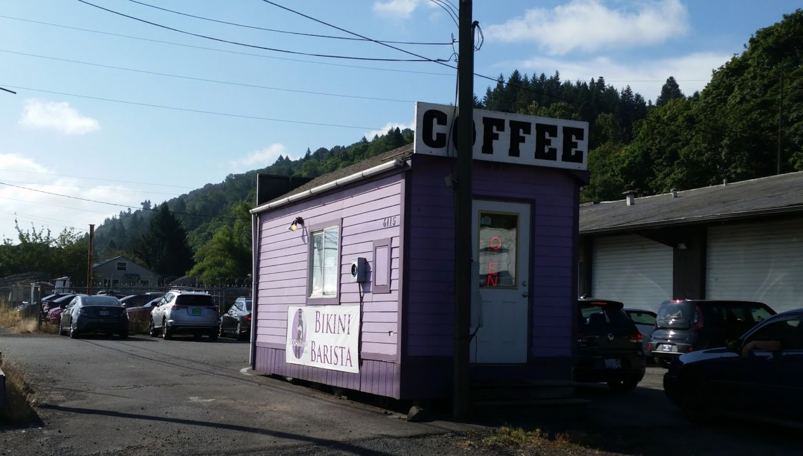

Mocharama has a new name
Depending on where you work, this post may not be safe for work. Well, the links, at the very least.
After my first day in Portland, on the ride back to the yurt, we passed by a small purple drive-up coffee shack on the side of the road. Zach pointed to it and told me that they make great coffee and that he and Nicole go there all the time.
The next morning, seeking coffee and being too afraid to use their coffee machine (that has been in a yurt with no running water since at least October), I asked whether I should go to the nearby purple coffee shack. Zach said yes, to not look them up on Google since they aren't on the map, and that I should tell the barista that the "yurt people say hi".
So off I go towards the city, to the purple espresso shack. A drive-in only, there were no other cars on the lot, save a Chevy Malibu that I assume belongs to the barista. Pulling up to the window and seeing the menu, I realize that something is not what I am expecting. The name of the enterprise is Sweet Seductions Espresso (formerly known as Mocharama until last week), and they serve special drinks such as the Three Legged Monkey, Eager Beaver, and Sugar Daddy. You can "ask your barista to make it an ALL NIGHTER" for an additional $1.10, which I assumed was another shot of espresso. There was also a sign for "Red Bull infusions", which I declined to ask about.
A few years ago, when lost my nightly Wikipedia black hole, I came across the bikini barista page. It's a concept that developed in the Pacific Northwest, not far from Seattle. In the years that passed, I had forgotten that they can be identified by the small, drive-thru only building. Also known as a sexpresso or bareista, it's basically what you would expect from a drive-thru coffeehouse, except the baristas are attractive young women dressed in bikinis (or less, in some locations on "topless Tuesdays").

A few seconds after I pulled up, a barista approached the window. Erika was not wearing a bikini quite as risqué as in the facebook photo. But yes, she was wearing a bikini, simple black with the letters "coffee" or "barista" (I don't exactly remember) written on the bottom piece. And yes, the window cuts off fairly low just around the thighs, for what I assume are obvious business reasons.
"Hello. What can I get for you?"
"I need three coffees, please. A cappuccino, a latte, and a drip coffee."
Me being someone who always runs cool, I thought it must be terribly cold to work in a shack in Portland while wearing a bikini. I know I'd be cold. I resisted the temptation to ask whether she was cold, for again, what I hope are obvious reasons here. But it's probably telling about me that at the forefront of my thoughts were "aren't you cold wearing that in this weather?".
As she prepared my coffees, I mentioned, "the yurt people say hello."
"What?"
"The yurt people. They live nearby. They say that they come here all the time and they wanted me to tell you hello."
She gave me a blank stare. "Oh. I don't work here very much."
I returned the blank stare. "Actually, I am pretty sure my friends have never been here but that they wanted me to tell a complete stranger that two other complete strangers say hello. They're like that."
She then disappeared behind the counter for a minute to get a cardboard cup holder for the coffees. She handed me my three coffees, I paid, and drove off.
When I got back to the yurt, Zach and Nicole were not trying to hard to hide their smirks. "So how was it?" asked Zach.
"I wasn't expecting sexpresso for breakfast."
They both started laughing and asked me about my experience. As I expected, neither of them had ever been to the place, so they had no idea. Some of their questions included:
- Was the barista cute? Yes
- Did you give her your number? No
- Would you give her your number? No
- How busy was the place? No one else was there
- Are you going to go back? Probably not
And so on. Thus started my day.
Of note: the coffee was pretty good.
Happy now, Zach?